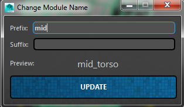

ART_ChangeModuleNameUI¶
Author: Jeremy Ernst
-
class
Interfaces.ART_ChangeModuleNameUI.ART_ChangeModuleName_UI(baseName, moduleInst, rigUiInst, prefix, suffix, parent=None)[source]¶ This class allows the user to change the prefix or suffix or both, of a given module. It is found within the skeletonSettingsUI of an individual module in the Rig Creator.
-
__init__(baseName, moduleInst, rigUiInst, prefix, suffix, parent=None)[source]¶ Instantiates the class, taking in current module information, and builds the interface.
Parameters: - baseName – The base name of the module, found on the network node attribute.
- moduleInst – The instance in memory of the module whose name is to change.
- rigUiInst – The instance in memory of the Rig Creator UI from which this class was called.
- prefix – The existing prefix of the module name.
- suffix – The existing suffix of the module name.
-
applyModuleNameChange()[source]¶ Checks to make sure a module doesn’t exist with the new name, and if not, updates naming of the module in a multitude of places. Any UI elements, joint movers, attribute values (like .Created_Bones), etc.
Note
- The following things get updated:
- QGroupBox label of the SkeletonSettingsUI
- Network Node .moduleName attribute
- Module Instance variable of self.name gets updated
- Created_Bones attribute values
- Joint Mover Nodes
- Rig Creator Outliner names for module
- Selection Script Job for outliner
- Any modules’ attributes that have a value that matches the old name (like parent module bone)
- Any modules that are a mirror of this module, and their mirrorModule attribute value
-